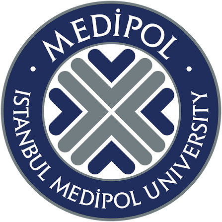
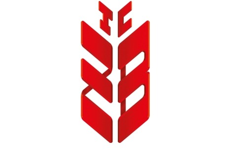
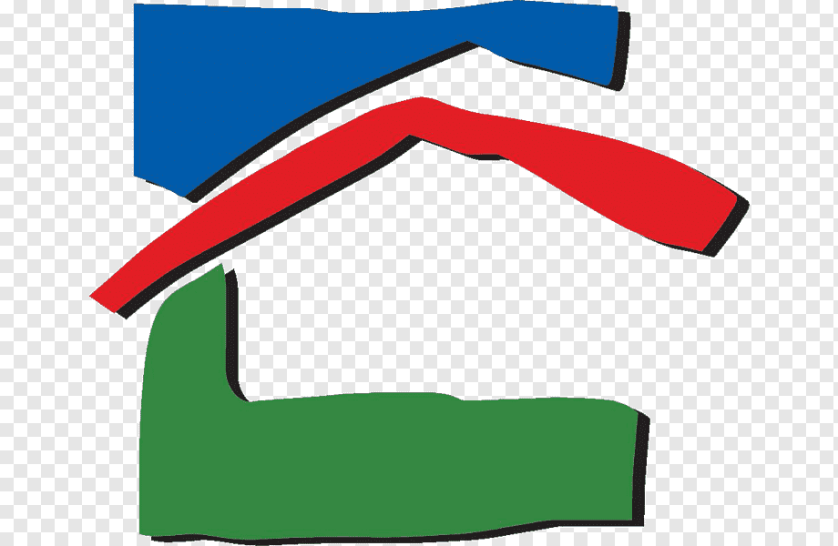
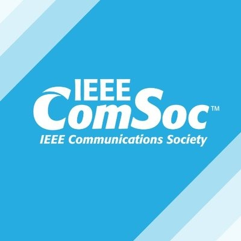

Elektrik ve Elektronik Mühendisliği öğrencisi olarak bilgisayarlı görü (Computer Vision), model eğitimi ve
donanım-yazılım entegrasyonları odaklı çalışmalar yürütüyorum. Kurumsal bilgi teknolojileri altyapılarında
edindiğim sistem ve sanallaştırma tecrübesini, nesne yönelimli programlama yetkinliklerimle birleştirerek
karmaşık mühendislik problemlerine analitik çözümler üretiyorum. Liderlik görevlerimden ve takım
çalışmalarından kazandığım güçlü iletişim becerilerimle, mühendislik standartlarına tam uyumlu, yenilikçi
ve ölçeklenebilir teknolojiler geliştirmeyi hedefliyorum.
Konum
İstanbul, Türkiye
Üniversite
İstanbul Medipol Üni.
Bölüm
Elektrik-Elektronik Müh.
Diller
Türkçe, İngilizce (İleri)
Akademik Yolculuk

Tahmini Mezuniyet: Haziran 2028
İstanbul Medipol Üniversitesi
Lisans Derecesi, Elektrik ve Elektronik Mühendisliği
Deneyim

Temmuz 2026 — Ağustos 2026 · 1 ay
Ziraat Teknoloji A.Ş.
Sistem ve Sanallaştırma Mühendisliği Stajyeri (IT Altyapı & Operasyon)
Türkiye'nin en büyük teknoloji üslerinden birinde, dev ölçekli kurumsal veri merkezlerinde VMware vSphere, VMware Workstation ve sanallaştırma mimarileri üzerinde görev almaktayım.
Red Hat Enterprise Linux ve Windows Server platformlarında terminal tabanlı sistem yönetimi, ağ topolojisi analizi ve operasyonel iş sürekliliği süreçlerini uygulamaktayım.

Ağustos 2025 — Eylül 2025 · 1 ay
Gülverdi Elektrik
Elektrik Mühendisliği Stajyeri (Güç Sistemleri & Elektrik Altyapısı)
Emlak Konut – Adıyaman Merkez Yerinde Dönüşüm projesindeki gönüllü stajım süresince, büyük ölçekli anahtar teslim elektrik altyapı ve üst yapı çalışmalarının yürütülmesinde kapsamlı uygulamalı deneyim kazandım.
Yüksek gerilim sistemleri, bina elektrik altyapısı ve kompleks bina geneli zayıf akım sistemleri dahil olmak üzere geniş bir yelpazede sistemler üzerinde derin teknik yetkinlik geliştirdim.

Eylül 2025 — Temmuz 2026
IEEE Communications Society (ComSoc) Başkanı
İstanbul Medipol Üniversitesi
Mühendislik öğrencilerinin sektörel gelişimini desteklemek amacıyla kaynak yönetimi, organizasyon planlaması ve teknoloji seminerleri koordinasyonunu sağladım.
Projeler
VoltPilot
Nisan 2026 — Haziran 2026
EV şarj altyapısı yatırımları öncesinde tesislerin elektriksel şebeke kapasitelerini analiz eden veri tabanlı bir mühendislik simülasyon projesi.
TypeScriptSimülasyonŞebeke Analizi
Problem
EV şarj altyapısı yatırımı yapacak tesisler, mevcut şebeke kapasitesinin yeterli olup olmadığını önceden bilemiyordu.
Yaklaşım
Tesislerin elektriksel şebeke kapasitesini analiz eden, veri tabanlı bir mühendislik simülasyonu geliştirdim.
Sonuç
Yatırım kararlarını veriye dayandıran, çalışan bir simülasyon aracı ortaya çıktı.
Bilgisayarlı görüyü donanım kontrolüyle birleştiren yapay zeka destekli bir güvenlik prototipi. Uç (edge) cihazlar için optimize edilmiş bir YOLOv8 nesne tespit modelini röle tabanlı bir kilit sistemine entegre ettim.
PythonYOLOv8Edge ComputingErişim Kontrolü
Problem
Oda/kapı erişimini ve doluluğunu donanımla entegre, güvenli bir şekilde otomatik olarak izleyebilecek hafif bir sisteme ihtiyaç vardı.
Yaklaşım
Uç (edge) cihazlarda çalışacak şekilde optimize edilmiş bir YOLOv8 nesne tespit modeli geliştirip, röle tabanlı bir kilit mekanizmasına entegre ettim.
Sonuç
Bilgisayarlı görüyü donanım kontrolüyle birleştiren, çalışan bir akıllı erişim ve doluluk takip prototipi ortaya çıktı.